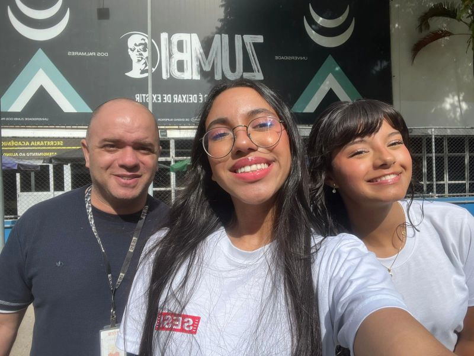
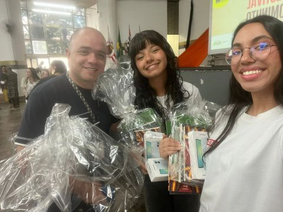

1º lugar • categoria Ensino Médio
Festival AfroMinuto
Participação no FLINKSAMPA por meio do Festival AfroMinuto, conquistando o primeiro lugar na categoria Ensino Médio. Uma experiência de criação audiovisual, identidade, representatividade e comunicação.
- Audiovisual
- Criatividade
- Representatividade